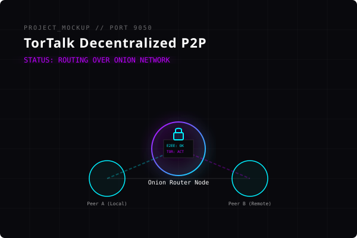
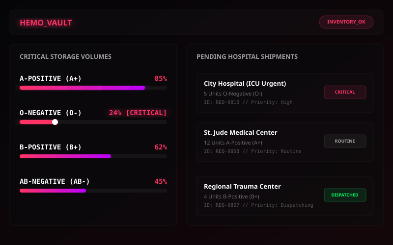
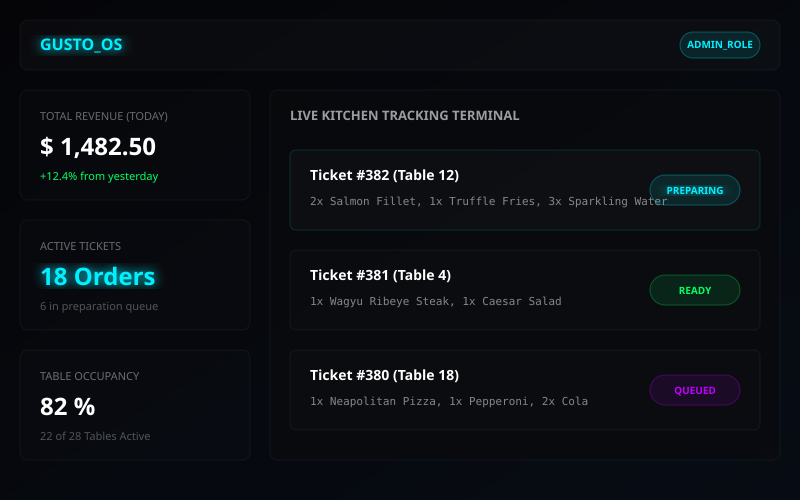

Computer Engineering graduate specializing in threat analysis, vulnerability assessments, penetration testing, and secure system defenses. Welcome to the security workspace.
Trained in systems programming, computer network protocols, operating systems architectures, and logical algorithms.
Focused on network packet monitoring, log audit reviews, defense-in-depth policies, threat intelligence, and OWASP modeling.
Fascinated by network intrusion alerts, analyzing system log repositories, and hunting indicators of compromise.
Practicing active vulnerability exploitation, OWASP Top 10 auditing, network port scanning, and Capture The Flag (CTF) environments.
B & B Institute of Technology, Anand. Started in 2020 and completed in May 2023. Discovered assembly languages, structural networking basics, database modeling, and low-level engineering paradigms.
Charotar University of Science and Technology (CHARUSAT), Anand. Started in August 2023 and graduated in April 2026. Expanded conceptual engineering, advanced operating systems, distributed architectures, network design, and security protocols.
Co-authored and presented "SQL Injection Discovery and Deterrence Techniques for Web Applications" at Manchester Metropolitan University, UK (presented at ICCCNet-2024).
Performed configuration audits, vulnerability analysis, and security reviews. Awarded "Best Performer" by the corporate founders for exceptional contributions.
Gained hands-on exposure to Security Operations Center workflows, threat monitoring, traffic flow logs analytics, and SIEM infrastructure setups.
Conducting end-to-end vulnerability assessment and penetration testing in simulated environments, using Metasploit, Nmap, and Kali Linux to capture flags.
Actively applying defensive engineering, security logging, threat hunting, and vulnerability exploitation methodologies. Seeking opportunities to trace threat patterns and execute rigorous security penetration scans on enterprise networks.
Drag and orbit the 3D grid sphere to map out my primary capabilities. Click filter categories below to isolate distinct nodes in real time.
A decentralized peer-to-peer messaging application routing traffic through Tor onion services. It ensures end-to-end encryption, metadata privacy, and domain masking to establish completely secure communication links without central servers.
Multi-hop Tor onion routing nodes.
End-to-End asymmetric cryptography keys.

A security auditing tool designed to scan web servers, crawl directories, trace open ports, check for SSL status anomalies, and test endpoints against common injection vectors (like SQLi and XSS).
OWASP Top 10 port and directory sweeps.
Multi-threaded parsing with formatted reporting.
An administrative database management platform designed to catalog donor histories, coordinate emergency transfusion volumes, track blood components inventory levels, and manage hospital supply requests.
Strict foreign key constraints and audit tables.
Interactive status dashboard for low stock warnings.

A complete business operations engine featuring role-based privileges (Admin, Kitchen, Billing), interactive order tracking tables, menu administration panel, and automated bill receipt generation.
Secured multi-role access verification.
Transactional MySQL queries with inputs sanitization.

Investigated advanced defensive computing topics. Primary publications focus on hybrid SQL Injection detection engines and evaluating intrusion machine learning models inside smart grid systems.
Presented at ICCCNet-2024, Manchester, United Kingdom
Proposed a hybrid detection model combining Longest Common Subsequence (LCS) string matching, active query runtime monitoring, and intelligent classification. This approach achieves superior detection accuracy and deters injection vectors before database execution.
An analysis of IDS Models and Datasets
Evaluated the suitability of cybersecurity datasets (NSL-KDD, CICIDS) for training machine learning algorithms to detect anomalies in smart grids. Highlighted telemetry packet fuzzing and protocol manipulation vulnerabilities in regional substations.
Need security consulting, infrastructural layouts, or system designs? Initialize a secure handshake. The ports are open.
Gujarat, India